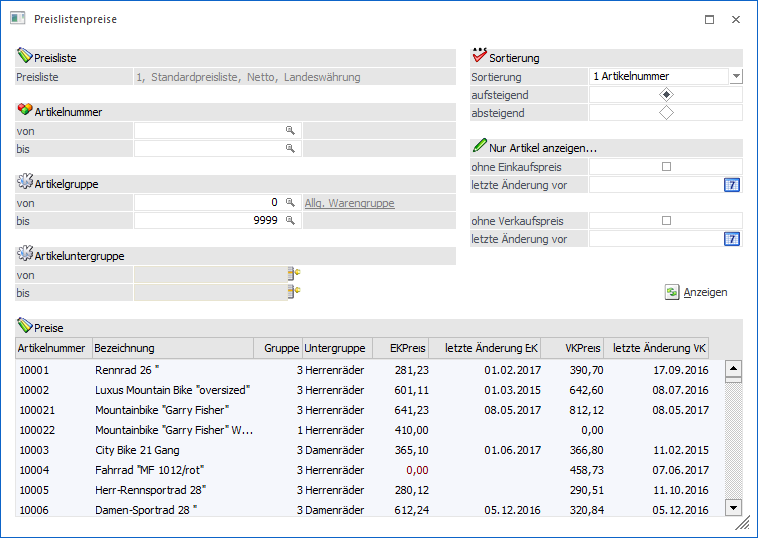
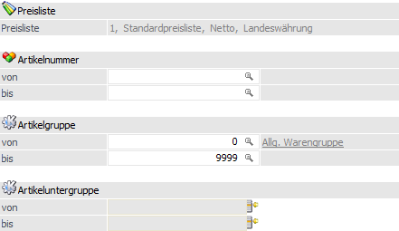
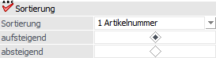
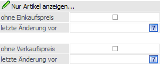
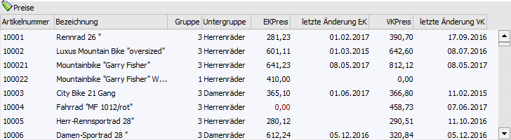
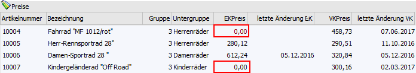
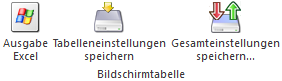
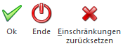

Das Fenster "Preislistenpreise" kann im Menüpunkt…
1 WinLine FAKT
1 Stammdaten
1 Preisstammdaten
1 Preislistendefinition
… durch Anwahl des Buttons "Preise der aktuellen Preisliste editieren" geöffnet werden. In diesem Programmbereich können sehr komfortabel Preislisteneinträge (Preisart "1 - Verkaufspreis" und "11 - Einkaufspreis") für bestehende Artikel geändert bzw. neue Einträge angelegt werden.

Es stehen folgende Informations- und Selektionsfelder zur Verfügung:
Selektion

Ø Preisliste
Im Informationsfeld "Preisliste" wird die Preisliste angezeigt, für welche aktuell die Preise bearbeitet werden.
Ø Artikelnummer von / bis
An dieser Stelle kann eine Selektion nach Artikeln vorgenommen werden.
Ø Artikelgruppe von / bis
In diesen Feldern kann eine Selektion nach der, in den Artikeln hinterlegten, Artikelgruppen vorgenommen werden.
Ø Artikeluntergruppe von / bis
An dieser Stelle kann eine Selektion nach der, in den Artikeln hinterlegten, Artikeluntergruppe vorgenommen werden.
Sortierung

Ø Sortierung
Die Sortierung in der Preistabelle kann nach den folgenden Kriterien erfolgen:
ü 1 - Artikelnummer
ü 2 - Artikelgruppe
ü 3 - Artikeluntergruppe
ü 4 - Bezeichnung
Ø Reihenfolge
Das unter "Sortierung" gewählte Kriterium kann durch diese Einstellung "aufsteigend" oder "absteigend" sortiert werden.
Nur Artikel anzeigen…

Ø ohne Einkaufspreis
Mit Hilfe der Option "ohne Einkaufspreis" wird eine Selektion aufgrund des allgemeinen Einkaufspreises (Preisart "11 - Einkaufspreis") vorgenommen.
ü Option "aktiviert"
Es werden
alle Artikel angezeigt, welche für die angezeigte Preisliste keinen allgemeinen
Einkaufspreis (Preisart "11 - Einkaufspreis") definiert haben.
ü Option "deaktiviert"
Es werden
alle Artikel angezeigt, welche für die angezeigte Preisliste einen allgemeinen
Einkaufspreis (Preisart "11 - Einkaufspreis") definiert haben.
Ø letzte Änderung vor (für "ohne Einkaufspreis")
Es werden nur Artikel in der Preistabelle angezeigt, bei welchen das Datum "Datum letzte Änderung" vor dem hier definierten Datum liegt. Eine Hinterlegung ist nur möglich, wenn die Option "ohne Einkaufspreis" deaktiviert wurde.
Hinweis
Bei der Anlage eines Preises wird das "Datum letzte Änderung" nicht gefüllt. Dieses erhält erst bei der ersten Änderung eines vorhandenen Preises einen Eintrag.
Ø ohne Verkaufspreis
Mit Hilfe der Option "ohne Verkaufspreis" wird eine Selektion aufgrund des allgemeinen Verkaufspreises (Preisart "1 - Verkaufspreis") vorgenommen.
ü Option "aktiviert"
Es werden
alle Artikel angezeigt, welche für die angezeigte Preisliste keinen allgemeinen
Verkaufspreis (Preisart "1 - Verkaufspreis") definiert haben.
ü Option "deaktiviert"
Es werden
alle Artikel angezeigt, welche für die angezeigte Preisliste einen allgemeinen
Verkaufspreis (Preisart "1 - Verkaufspreis") definiert haben.
Ø letzte Änderung vor (für "ohne Verkaufspreis")
Es werden nur Artikel in der Preistabelle angezeigt, bei welchen das Datum "Datum letzte Änderung" vor dem hier definierten Datum liegt. Eine Hinterlegung ist nur möglich, wenn die Option "ohne Verkaufspreis" deaktiviert wurde.
Hinweis
Bei der Anlage eines Preises wird das "Datum letzte Änderung" nicht gefüllt. Dieses erhält erst bei der ersten Änderung eines vorhandenen Preises einen Eintrag.
Ø Anzeigen
Durch Anwahl des Buttons "Anzeigen" wird die Preistabelle aufgrund der getroffenen Selektion gefüllt.
Tabelle "Preise"

In der Preistabelle werden, nach Anwahl des Buttons "Anzeigen", alle Artikel aufgrund der getroffenen Selektion angezeigt. Neben den Standard-Spalten können über das Kontextmenü der rechten Maustaste (Funktion "Spalten anzeigen / verstecken") jederzeit optionale Spalten hinzugefügt bzw. entfernt werden. Gibt es zu einem Artikel noch keinen Preislisteneintrag, dann wird dieser in "rot" dargestellt.
Beispiel
Bei dem Artikel "10004" existiert bisher noch kein allgemeiner Einkaufspreis. Im Gegensatz hierzu gibt es bei dem Artikel "10007" einen Preislisteneintrag, welcher aber "0,00" ist.

Ø Artikelnummer
An dieser Stelle wird die Artikelnummer des Artikels dargestellt.
Ø Bezeichnung
In diesem Feld wird die Bezeichnung des Artikels angezeigt.
Ø Gruppe
An dieser Stelle wird die Nummer der Artikelgruppe ausgewiesen.
Ø Untergruppe
In der Spalte "Untergruppe" wird die Artikeluntergruppe des Artikels in Klarschrift dargestellt.
Ø EKPreis
An dieser Stelle wird der allgemeine Einkaufspreis des Artikels angezeigt und kann editiert werden.
Ø letzte Änderung EK
In der Spalte "letzte Änderung EK" wird das letzte Änderungsdatum des Einkaufspreises angezeigt.
Hinweis
Bei der Anlage eines Preises wird das "Datum letzte Änderung" nicht gefüllt. Dieses erhält erst bei der ersten Änderung eines vorhandenen Preises einen Eintrag.
Ø VKPreis
An dieser Stelle wird der allgemeine Verkaufspreis des Artikels angezeigt und kann editiert werden.
Ø letzte Änderung VK
In der Spalte "letzte Änderung VK" wird das letzte Änderungsdatum des Verkaufspreises angezeigt.
Hinweis
Bei der Anlage eines Preises wird das "Datum letzte Änderung" nicht gefüllt. Dieses erhält erst bei der ersten Änderung eines vorhandenen Preises einen Eintrag.
Ø Anlage EK (optionale Spalte)
An dieser Stelle wird das Datum der Anlage des Preislisteneintrags für den Einkauf angezeigt.
Ø Anlage VK (optionale Spalte)
An dieser Stelle wird das Datum der Anlage des Preislisteneintrags für den Verkauf angezeigt.
Tabellenbuttons

Ø Ausgabe Excel
Durch Anwahl des Buttons "Ausgabe Excel" wird der Inhalt der Tabelle nach Microsoft Excel übergeben.
Ø Tabelleneinstellungen speichern
Die Spalten einer Tabelle können grundsätzlich an beliebige Positionen verschoben, bzw. in der Breite entsprechend angepasst werden. Durch Anwahl des Buttons "Tabelleneinstellungen speichern" werden die Einstellungen benutzerspezifisch gespeichert und bei dem nächsten Aufruf des Programmpunktes wieder vorgeschlagen.
Ø Gesamteinstellungen speichern
Im Gegensatz zu "Tabelleneinstellungen speichern" können mit "Gesamteinstellungen speichern" mehrere Tabellenaufbauten gespeichert und nach Wunsch geladen werden. Zusätzlich werden Sonderfunktionen der Tabelle (z.B. "Spalte gruppieren") ebenfalls bei der Speicherung bedacht.
Buttons

Ø Ok
Durch Anwahl des Buttons "Ok" bzw. der Taste F5 werden alle geänderten bzw. neu erfassten Preise gespeichert.
Ø Ende
Durch Anwahl des Buttons "Ende" bzw. der Taste ESC wird das Fenster geschlossen und alle getätigten Eingaben verworfen.
Ø Einschränkungen zurücksetzten
Mit Hilfe des Buttons "Einschränkungen zurücksetzten" können alle vorgenommenen Selektionen entfernt werden.
Hinweis
In diesem Menüpunkt werden nur allgemeine VK/EK-Preise ohne Zusatz von Datum von/bis bzw. Menge ab berücksichtigt und angezeigt.